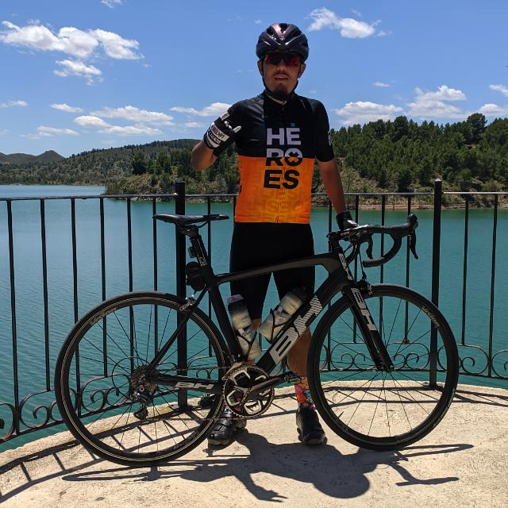

Ejemplo de título
Diapositiva 1
Ejemplo de título
Diapositiva 2
Ejemplo de título
Diapositiva 3
26 años de edad, montar en bici me hace feliz. Voy al monte siempre que puedo, ya sea en bicicleta, a hacer senderismo o simplemente a respirar.
Apasionado de la tecnología en general, de la informática en particular. Friki de los videojuegos, el cine y las series.
La rapidez no es lo mío, pero a mi ritmo termino haciendo lo que me propongo.

Me considero una persona ordenada, con las cosas claras y la cabeza en su sitio.
Pienso que es importante la sinceridad, aunque a veces no es una buena 'cualidad'. Tambíen me considero una persona puntual y respetuosa con quién lo merezca.
FORMACIÓN ACADÉMICA
I.E.S VEGA DEL ARGOS Ciudad: Cehegín SEPTIEMBRE DEL 2006 - JUNIO DEL 2012 Título de Educación Secundaria Obligatoria I.E.S GINÉS PÉREZ CHIRINOS, Ciudad: Caravaca de la Cruz SEPTIEMBRE DEL 2012 - JUNIO DEL 2014 Ciclo Formativo de Formación Profesional de Grado Medio correspondiente al título de Técnico en Sistemas Microinformáticos y Redes. CPR FP INSTITUTO SUPERIOR DE FORMACIÓN PROFESIONAL SAN ANTONIO, Ciudad: Murcia SEPTIEMBRE DEL 2016 - JUNIO DEL 2017 1er curso del Ciclo Formativo de Desarrollo de Aplicaciones Web. I.E.S GINÉS PÉREZ CHIRINOS, Ciudad: Caravaca de la Cruz SEPTIEMBRE DEL 2019 - JUNIO DEL 2020 2º curso del Ciclo Formativo de Desarrollo de Aplicaciones Multiplataforma.
IDIOMAS
Inglés: Nivel medio.
EXPERIENCIA PROFESIONAL
2014 - Prácticas de 3 meses correspondientes al Ciclo Formativo de Formación Profesional de Grado Medio de Técnico en Sistemas Microinformáticos y Redes realizadas en el Excmo. Ayuntamiento de Cehegín. Trabajos temporales en fincas frutícolas, recogida y empaquetado de melocotón y tomate.
INFORMÁTICA
Manejo con soltura de diferentes sistemas operativos: Windows y Linux. Microsoft Office: Word, Excel, PowerPoint nivel alto. Desarrollo y diseño web: Nivel medio. Desarrollo de aplicaciones: Nivel medio. Diseño de interfaces: Nivel medio. Conocimiento medio en Visual Studio. Conocimiento medio en los lenguajes de programación JAVA y JavaScript.
Premio al mejor diseño de la web de mi casa.
Se me da muy bien no hacer nada. Personalmente se me da muy bien escuchar y hacer pizzas. En lo profesional o lo que en un futuro pueda serlo, desde que empecé en esto de la informática lo que más me gusta y creo que mejor se me da es el desarrollo web, concretamente la parte del lado del cliente, Frontend, o como me gusta llamarlo a mí. 'lo que la gente ve'.